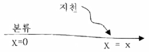
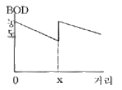
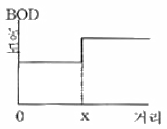
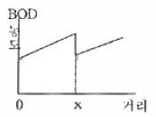
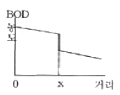
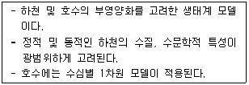
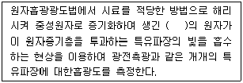
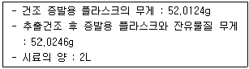
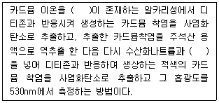

수질환경산업기사 (2006-05-14 기출문제)
1과목: 수질오염개론
1. 박테리아의 경험식은 C5H7O2N 이다. 0.5kg의 박테리아를 완전히 산화시키려면 몇 kg의 산소가 필요한가? (단, 박테리아는 최종적으로 CO2, H2O, NH3로 분해됨)
- 0.71kg
- 0.94kg
- 1.18kg
- 1.24kg
(정답률: 알수없음)

2. 0.01M NaOH 200mL를 1M-H2SO4로 중화 적정할 때 소비되는 이론적 H2SO4의 양은?
- 0.5mL
- 1mL
- 1.5mL
- 2mL
(정답률: 알수없음)
3. 수산화나트륨 30g을 증류수에 넣어 1.5L로 하였을 때 규정농도(N)는? (단, Na의 원자량은 23이다.)
- 0.5N
- 1.0
- 1.5N
- 2.0N
(정답률: 알수없음)
4. 그림에서 오염도가 높은 지천이 유입될 때의 개략적인 BOD 농도 곡선을 표시한 것으로 가장 알맞은 것은? (단, 비점오염원 등의 기타 영향은 무시함)





(정답률: 알수없음)
5. 유기물이 존재하는 물에 염소살균시 발생되는 발암성이 큰 물질로 가장 적절한 것은?
- Trichloroethylene(TCE)
- 차아염소산나트륨(NaOCl)
- Chloramine
- Trihalomethane(THM)
(정답률: 알수없음)
6. 하천의 유기물 분해상태를 조사하기 위해 20℃에서 BOD를 측정했을 때 K1=0.15day이었다. 실제 하천온도가 18℃일 때 정확한 탈산소계수(K1)는? (단, 온도보정계수는 1.047이다)
- 0.121/day
- 0.128/day
- 0.132/day
- 0.137/day
(정답률: 알수없음)
7. Formaldehyde(CH2O) 1200mg/L 의 이론적인 COD는?
- 1260mg/L
- 1270mg/L
- 1280mg/L
- 1290mg/L
(정답률: 알수없음)
8. BOD가 230mg/L, 배수량이 2500m3/일의 생활오수를 BOD 오탁부하량이 115kg/일이 되게 줄이려면 몇 %의 BOD를 제거해서 하천수로 방류시켜야 하는가?
- 80%
- 85%
- 90%
- 95%
(정답률: 알수없음)
9. 우리나라의 수자원 이용현황 중 가장 많은 용도로 사용하고 있는 용수는?
- 생활용수
- 공업용수
- 농업용수
- 하천유지용수
(정답률: 알수없음)
10. 다음이 설명하는 하천 모델로 가장 적절한 것은?

- QUAL
- DO-SAG
- WQRRS
- WASP
(정답률: 알수없음)
11. 친수성 콜로이드에 관한 설명으로 틀린 것은?
- 물과 쉽게 반응한다.
- 염에 민감하다.
- 표면장력이 용매보다 약하다.
- 틴달효과가 약하거나 거의 없다.
(정답률: 알수없음)
12. 깊은 호수나 저수지의 수직방향의 물 운동이 없을 때 성층현상(成層現象)으로 생기는 성층구분 순서로 알맞은 것은? (단, 수표면으로 부터)
- epilimnion → hypolimnion → thermocline → 침전물층
- epilimnion → thermocline → hypolimnion → 침전물층
- hypolimnion → thermocline → epilimnion → 침전물층
- hypolimnion → epilimnion → thermocline → 침전물층
(정답률: 알수없음)
13. 어떤 오염물질의 반응 초기 농도가 200mg/L에서 2시간 후에 40mg/L로 감소되었다. 이 반응이 1차 반응이라고 한다면 4시간 후의 농도(mg/L)는?
- 4.0
- 8.0
- 16.0
- 18.0
(정답률: 알수없음)
14. 수은주 높이 200mm는 수주로 몇 mm인가?
- 1760
- 2720
- 3360
- 4388
(정답률: 알수없음)
15. BOD 120mg/L, 유량 5000m3/day의 폐수를 BOD 3mg/L, 유량 7,000,000m3/day의 하천수에 통상적으로 방류할 때, 방류지점에서 폐수와 하천수가 완전히 혼합하여 유하한다고 가정하면, 폐수가 방류되어 완전히 혼합된 직후 유하하는 하천수 중의 BOD의 1일당 총 부하량(ton)은? (단, 분해 등 기타 사항은 고려하지 않음)
- 15.6
- 18.6
- 21.6
- 25.6
(정답률: 알수없음)
16. pH가 1.7인 용액 중의 [H+]는 몇 mol/L인가?
- 1×10-2
- 2×10-2
- 1×10-3
- 2×10-3
(정답률: 알수없음)
17. BOD5=300mg/L이고, COD=600mg/L인 경우 NBDCOD는? (단, 탈산소계수K1=0.2/day, 상용대수 기준)
- 267mg/L
- 289mg/L
- 321mg/L
- 343mg/L
(정답률: 알수없음)
18. PCB에 관한 설명 중 알맞은 것은?
- 산, 알칼리, 물과 격력히 반응하여 수소를 발생시킨다.
- 만성질환증상으로 카네미유증이 대표적이다.
- 화학적으로 불안정하며 반응성이 크다.
- 유기용제에 난용성이므로 절연제로 활용 된다.
(정답률: 알수없음)
19. 다음 중 적조현상과 관계가 없는 것은?
- 해류의 정체
- 염분농도의 증가
- 수온의 상승
- 영양염류의 증가
(정답률: 알수없음)
20. 해수의 특징으로 틀린 것은?
- 해수의 Mg/Ca 비는 3~4 정도이다.
- 해수는 약 전해질로 pH 약 8.2 정도이다.
- 해수 내 전체질소 중 35% 정도는 암모니아성 질소, 유기질소 형태이다.
- 해수의 밀도는 수온, 염분, 수압의 함수이며 수심이 깊을수록 증가한다.
(정답률: 알수없음)
2과목: 수질오염방지기술
21. 상수처리시 용해성 성분 중 무기물인 불소의 일반적인 처리방법과 가장 거리가 먼 것은?
- 응집침전
- 골탄
- 전기분해
- 투석
(정답률: 알수없음)
22. 활성슬러지공법으로 100m3/day의 폐수를 처리한다. 포기조의 크기는 20m3 , 포기조내의 MLSS 농도는 4000mg/L로 유지된다. 처리수로 유실되는 SS 농도는 20mg/L, 폐기시키는 슬러지의 양은 1m3/day, 폐기되는 슬러지의 SS농도는 10,000mg/L이라면 미생물체류시간(SRT)은? (단, 슬러지 비중은 1.0)
- 3.2day
- 6.7day
- 9.6day
- 11.2day
(정답률: 알수없음)
23. 생물학적 인 제거 공정인 Phostrip 공법에 관한 설명으로 틀린 것은?
- 인 침전을 위하여 석회주입이 필요함
- 최종 침전지에서 인 용출 방지를 위하여 MLSS 내 DO를 높게 유지하여야 함
- 기존 활성슬러지 처리장에 쉽게 적용 가능함
- Stripping을 위한 별도의 반응조가 필요 없음
(정답률: 알수없음)
24. 차아염소산과 수중의 암모니아나 유기성 질소화합물이 반응하여 클로라민을 형성할 때 pH가 9인 경우 가장 많이 존재하게 되는 것은?
- 모노클로라민
- 디클로라민
- 트리클로라민
- 헤테로클로라민
(정답률: 알수없음)
25. 어떤 공장폐수 내 수은함량이 10mg/L이다. 이 폐수를 흡착법으로 처리하여 2mg/L까지 처리하고자 할 때 요구되는 흡착 제량은? (단, 흡착식은 Freundlich 등온식에 따르며 K=0.5, n=2 이다.)
- 약 9.4 mg/L
- 약 11.3 mg/L
- 약 15.5 mg/L
- 약 18.4 mg/L
(정답률: 알수없음)
26. 하수고도처리공법인 수정 Bardenpho(5단계)에 관한 설명과 가장 거리가 먼 것은?
- 질소와 인을 동시에 처리할 수 있다.
- 내부반송률을 낮게 유지할 수 있어 비교적 적은 규모의 반응조 사용이 가능하다.
- 폐슬러지 내의 인의 함량이 높아 비료가치가 있다.
- 2차 호기성조(재포기조)의 역할은 종침에서 탈질에 의한 Rising 현상 및 인의 재방출을 방지하는데 있다.
(정답률: 알수없음)
27. 물리, 화학적 질소제거 공정 중 이온교환에 관한 설명으로 틀린 것은?
- 생물학적 처리 유출수 내의 유기물이 수지의 접착을 야기한다.
- 고농도의 기타 양이온이 암모니아 제거능력을 증가시킨다.
- 재사용 가능한 물질(암모니아 용액)이 생산된다.
- 부유물질 축적에 의한 과다한 수두손실을 방지하기 위하여 여과에 의한 전처리가 대개 필요하다.
(정답률: 알수없음)
28. 비중 2.6, 직경 0.015mm의 입자가 수중에서 자연침강 할 때의 속도가 0.56m/hr였다. 입자의 침전속도가 Stokes 법칙에 따른다면 동일 조건에서 비중 1.2, 직경 0.03mm인 입자의 침전속도는?
- 약 0.3m/hr
- 약 0.6m/hr
- 약 0.9m/hr
- 약 1.2m/hr
(정답률: 알수없음)
29. 고도 수처리 방법에 사용되는 각종 분리막에 관한 설명으로 틀린 것은?
- 역삼투방법의 분리형태는 용해, 확산이다.
- 한외여과의 분리형태는 체걸음이다.
- 투석의 구동력은 정수압차이다.
- 정밀여과의 막형태는 대칭형 다공성 막이다.
(정답률: 알수없음)
30. 슬러지의 함수율이 95%로 부터 90%로 되면 전체 슬러지의 부피는 몇 % 감소 되는가?
- 5%
- 25%
- 30%
- 50%
(정답률: 알수없음)
31. 회전원판에 의한 생물학적 처리법에서 회전원판에 대한 침적 면적(양면 합계 면적임)을 15m2로 할 때 침적율을 40%로 하기 위해서는 원판의 직경(D)은? (단, 원판의 면적은 양면사용을 기준으로 함)
- 약 3.5m
- 약 4.9m
- 약 5.2m
- 약 6.1m
(정답률: 알수없음)
32. 상수고도처리시 사용되는 생물활성탄(BAC : Biological Activated Carbon)의 단점과 가장 거리가 먼 것은?
- 활성탄의 사용시간이 단축된다.
- 활성탄이 서로 부착, 응집하여 수두손실이 증가할 수 있다.
- 정상상태까지의 기간이 길다.
- 활성탄에 병원균이 자랄 때 문제가 될 수 있다.
(정답률: 알수없음)
33. 정수처리를 위한 침사지 내 평균유속의 표준 범위는?
- 2~7cm/sec
- 7~15cm/sec
- 15~30cm/sec
- 30~45cm/sec
(정답률: 알수없음)
34. 유입유량과 농도가 8,500m3/day, BOD 300mg/L인 폐수를 처리장에서 처리 후 매일 하천으로 320kg의 BOD를 배출하고 있다. 이 처리장에서 몇 %의 BOD가 제거되는가? (단, 처리 전후에 유량 변동은 없다.)
- 82.7%
- 87.5%
- 92.3%
- 95.3%
(정답률: 알수없음)
35. 표준상태에서 0.5kg의 glucose로부터 발생 가능한 CH4 가스량은? (단, 혐기성 분해 기준)
- 117L
- 125L
- 162L
- 187L
(정답률: 알수없음)
36. 하수처리에 관련된 4가지 침전형태 중 압밀침전에 관한 설명으로 가장 거리가 먼 것은?
- 입자들의 농도가 너무 커서 입자들끼리 구조물을 형성하여 더 이상의 침전은 압밀에의해서만 생기는 고농도의 부유액에서 일어나는 침전이다.
- 입자 등은 서로 간의 상대적 위치를 변경하면서 전체가 한 개의 단위로 침전한다.
- 압밀은 상부의 액체로부터 침전에 의하여 입자구조물에 연속적으로 가해지는 입자들의 무게 때문에 일어나게 된다.
- 깊은 2차 침전시설과 슬러지 농축시설의 바닥에서와 같이 깊은 실러지 층의 하부에서 보통 일어난다.
(정답률: 알수없음)
37. 인구 45,000명인 도시의 폐수를 처리하기 위한 처리장을 설계하였다. 폐수의 유량은 350L/인ㆍday이고, 침강탱크의 체류시간 2hr, 월류속도 35m3/m2ㆍday가 되도록 설계하였다면 이 침강 탱크의 용적(V)과 표면적(A)은?
- V=1,313m3, A=450m2
- V=1,313m3, A=540m2
- V=1,475m3, A=450m2
- V=1,475m3, A=540m2
(정답률: 알수없음)
38. 하수의 3차 처리 공법인 A/O 공정 중 폭기조의 주된 역할을 가장 알맞게 설명한 것은?
- 탈질
- 질소의 탈기
- 인의 과잉섭취
- 인의 방출
(정답률: 알수없음)
39. 피혁공장에서 BOD 400mg/L의 폐수가 500m3/day로 방류되고 이것을 활성오니법으로 처리하고자 한다. 하루 슬러지는 유입유량의 5%(부피기준, 함수율 99%)가 발생된다고 보고 이때 슬러지를 5kg/m2 -hr(고형물기준)의 성능을 가진 진공여과기로 매일 8시간씩 탈수작업을 하여 처리하려면 여과기 면적은 얼마나 소요되는가? (단, 슬러지 비중은 1.0으로 가정한다.)
- 6.25m2
- 8.25m2
- 10.25m2
- 12.25m2
(정답률: 알수없음)
40. A공단에 공단 폐수처리장을 건설하고자 한다. 폐수처리공정에서 BOD 제거효율을 1차 처리 : 30%, 2차 처리 : 85%, 3차 처리 : 10%로 할 경우 최종방류수(처리수)의 BOD농도가 10mg/L이었다면 최초 BOD 유입수 농도는?
- 약 110mg/L
- 약 130mg/L
- 약 150mg/L
- 약 180mg/L
(정답률: 알수없음)
3과목: 수질오염공정시험방법
41. 분원성 대장균군 측정 방법 중 막여과 시험방법에 관한 설명으로 틀린 것은?
- 분원성 대장균군수/100mL 단위로 표시한다.
- 실험기간이 최적확수 시험법보다 단축된다.
- 다량의 시료를 여과할 수 없는 단점이 있다.
- 분원성 대장균군은 배양 후 여러 가지 색조를 띠는 파란색의 집락을 형성하며 이를 계수한다.
(정답률: 알수없음)
42. 피토우관에 관한 설명으로 틀린 것은?
- 부유물질이 적은 대형관에서 효율적인 유량측정기이다.
- 피토우관의 유속은 마노미터에 나타나는 수두차에 의하여 계산한다.
- 피토우관으로 측정할 때는 반드시 일직선상의 관에서 이루어져야 한다.
- 피토우관의 설치장소는 엘보우, 티 등 관이 변화하는 지점으로부터 최소한 관지름의 5~15배 정도 떨어진 지점이어야 한다.
(정답률: 알수없음)
43. 0.1N 과망간산칼륨액의 표정에 사용되는 표준시약은?
- 무수 탄산나트륨
- 수산나트륨
- 티오황산나트륨
- 수산화나트륨
(정답률: 알수없음)
44. 가스크로마토그래피 분석에서 전자포획형 검출기(ECD)를 검출기로 사용할 때 선택적으로 검출할 수 있는 물질과 가장 거리가 먼 것은?
- 유기할로겐화합물
- 니트로화합물
- 유기금속화합물
- 유기질소화합물
(정답률: 알수없음)
45. ( )속에 알맞은 말은?

- 여기상태
- 이온상태
- 분자상태
- 바닥상태
(정답률: 알수없음)
46. 노말헥산추출물질 측정원리 내용 중 노말헥산으로 추출시 시료의 액성으로 알맞은 것은?
- pH 10 이상의 알칼리성으로 한다.
- pH 4 이하의 산성으로 한다.
- pH 6~8 범위의 중성으로 한다.
- 액성에는 관계 없다.
(정답률: 알수없음)
47. 투명도 측정방법에 관한 설명으로 틀린 것은?
- 투명도 판의 색조차는 투명도에 큰 영향이 있어 표면이 더러워진 경우에 세척을 하여야 한다.
- 흐름이 있어 줄이 기울어질 경우에는 2kg 정도의 추를 달아서 줄을 세워야 한다.
- 강우시에는 정확한 투명도를 얻을 수 없으므로 측정하지 않는 것이 좋다.
- 투명도를 측정하기 위한 줄은 0.1m 간격으로 눈금표시가 되어 있어야 한다.
(정답률: 알수없음)
48. 노말헥산 추출물질 시험에서 다음과 같은 결과를 얻었다. 이때 노말헥산 추출물질의 농도는?

- 약 2 mg/L
- 약 4 mg/L
- 약 6 mg/L
- 약 8 mg/L
(정답률: 알수없음)
49. 유리섬유 거름 종이법을 이용한 부유물질(SS)의 측정시 정량범위는?
- 1mg 이상
- 3mg 이상
- 4mg 이상
- 5mg 이상
(정답률: 알수없음)
50. 수은 측정을 위해 흡광광도법(디티존법)을 적용할 때 사용되는 완충액으로 가장 적절한 것은?
- 인산-수산염 완충액(수은시험용)
- 붕산-탄산염 완충액(수은시험용)
- 인산-탄산염 완충액(수은시험용)
- 수산-붕산염 완충액(수은시험용)
(정답률: 알수없음)
51. 인산염인 측정시험과 관련된 내용으로만 짝지어진 것은? (단, 흡광광도법 기준)
- 몰리브덴산암모늄, 염화제일주석, 적색
- 몰리브덴산암모늄, 염화제일주석, 청색
- 황산파라륨, 염화안티몬, 적색
- 황산파라륨, 염화안티몬, 청색
(정답률: 알수없음)
52. 4각 위어를 사용하여 유량을 산출할 때 사용되는 공식은? (단, Q : 유량, K : 유량계수, b : 절단의 폭, h : 위어의 수두, 단위는 적절하다고 가정함)
- Q = Kh5/2
- Q = Kbh3/2
- Q = Kbh5/2
- Q = Kh3/2
(정답률: 알수없음)
53. 알킬수은을 가스크로마토그래프로 측정할 때의 기구 및 기기에 관한 설명으로 잘못된 것은?
- 운반가스 : 질소 또는 헬륨(99.99% 이상)
- 컬럼충전제 : 크로마토그래프용 크로모솔브 W(알킬수은 시험용)
- 검출기 : 전자포획형 검출기
- 컬럼 : 유리제, 안지름 3mm, 길이 4~15cm
(정답률: 알수없음)
54. 24℃에서 pH가 6.35일 때 [OH-]는?
- 5.54×10-8 mol/L
- 4.54×10-8 mol/L
- 3.24×10-8 mol/L
- 2.24×10-8 mol/L
(정답률: 알수없음)
55. 측정 시료 채취시 반드시 유리용기를 사용해야 하는 측정항목은?
- PCB
- 불소
- 시안
- 셀레늄
(정답률: 알수없음)
56. 용액 500mL 속에 NaOH 2g이 녹아있다. 이 용액의 규정농도는? (단, Na 원자량은23)
- 0.1N
- 0.2N
- 0.3N
- 0.4N
(정답률: 알수없음)
57. 실험에 관한 용어 설명으로 틀린 것은?
- 냄새가 없다 : 냄새가 없거나 또는 거의 없는 것을 표시하는 것이다.
- 시험에서 사용하는 물은 따로 규정이 없는 한 정제수 또는 탈염수를 말한다.
- 정확히 단다 : 규정된 양의 시료를 취하여 분석용 저울로 0.1mg까지 다는 것을 말한다.
- 감압이라 함은 따로 규정이 없는 한 15mmH2O 이하를 말한다.
(정답률: 알수없음)
58. 다음은 카드뮴 측정원리(흡광광도법 : 디티존법)에 관한 내용이다. ( )안에 공통으로 들어가는 내용은?

- 시안화칼륨
- 염화제일주석산
- 분말아연
- 황화나트륨
(정답률: 알수없음)
59. DO 측정을 위해 Fe(Ⅲ) 100~200mg/L가 함유되어 있는 시료를 전처리하는 방법으로 가장 적절한 것은?
- 황산의 첨가 전 불화칼륨용액(30g/L) 1mL를 가한다.
- 황산의 첨가 전 불화칼륨용액(300g/L) 1mL를 가한다.
- 황산의 첨가 전 불화칼슘용액(30g/L) 1mL를 가한다.
- 황산의 첨가 전 불화칼슘용액(300g/L) 1mL를 가한다.
(정답률: 알수없음)
60. 비교전극과 이온 전극간의 전위차를 이용한 정량방법으로 이온 전극법이 이용된다. 이온 농도의 일반적 측정범위는?
- 10-1mol/L ~ 10-4mol/L
- 10-1mol/L ~ 10-10mol/L
- 10-7mol/L ~ 10-14mol/L
- 10-7mol/L ~ 10-17mol/L
(정답률: 알수없음)
4과목: 수질환경관계법규
61. 환경기술인의 업무를 방해하거나 환경기술인의 요청을 정당한 사유없이 거부한 자에 대한 벌칙기준으로 적절한 것은?
- 100만원 이하의 벌금
- 200만원 이하의 벌금
- 300만원 이하의 벌금
- 500만원 이하의 벌금
(정답률: 알수없음)
62. 수질오염방지기술 중 생물화학적 처리시설이 아닌 것은?
- 폭기시설
- 접촉조
- 살균시설
- 안정조
(정답률: 알수없음)
63. 비점오염방지시설의 관리, 운영기준에 관한 내용이다. 다음 중 '장치형 시설'과 가장 거리가 먼 것은?
- 여과형 시설
- 와류형 시설
- 저류형 시설
- 스크린형 시설
(정답률: 알수없음)
64. 다음의 위임업무보고사항 중 보고횟수가 '수시'인 것은?
- 폐수 무방류 배출시설의 설치허가(변경허가)현황
- 기타 수질오염원 현황
- 배출업소의 지도, 점검 및 행정처분 실적
- 배출부과금 부과실적
(정답률: 알수없음)
65. 폐수처리업 중 폐수 재이용업에서 사용하는 폐수운반차량의 도장 색깔로 적절한 것은?
- 황색
- 흰색
- 청색
- 녹색
(정답률: 알수없음)
66. 수질환경보전법에 사용되는 용어의 정의로 틀린 것은?
- 강우 유출수 : 일정지역에서 빗물이나 눈이 녹아 흘러내려 유출되는 물을 말한다.
- 불투수층 : 빗물 또는 눈 녹은 물 등이 지하로 스며들 수 없게 하는 아스팔트, 콘크리트 등으로 포장된 도로, 주차장, 보도 등을 말한다.
- 수질오염물질 : 수질오염의 요인이 되는 물질로서 환경부령으로 정하는 것을 말한다.
- 수질오염방지시설 : 점오염원, 비점오염원 및 기타 수질오염원부터 배출되는 수질오염물질을 제거하거나 감소하게 하는 시설로서 환경부령으로 정하는 것을 말한다.
(정답률: 알수없음)
67. 환경부장관 또는 시도지사가 측정망 설치계획을 결정, 고시한 때에 허가받은 것으로 볼 수 없는 것은?
- 하천법 규정에 의한 하천공사의 허가
- 하천법 규정에 의한 하천점용의 허가
- 공공수역관리법 규정에 의한 공공수역 점용의 허가
- 도로법 규정에 의한 도로점용의 허가
(정답률: 알수없음)
68. 낚시 금지구역에서 낚시행위를 한 자에 대한 과태료 기준으로 알맞은 것은?
- 50만원 이하의 과태료
- 100만원 이하의 과태료
- 200만원 이하의 과태료
- 300만원 이하의 과태료
(정답률: 알수없음)
69. 폐수배출시설의 배출허용항목 중 총인의 배출허용기준으로 적절한 것은? (단, 2007년 12월 31일 까지 적용, 청정지역 기준)
- 2mg/L 이하
- 4mg/L 이하
- 8mg/L 이하
- 10mg/L 이하
(정답률: 알수없음)
70. 수질오염경보인 조류주의보 발령시 조치사항으로 가장 거리가 먼 것은?
- 정수처리강화(활성탄처리, 오존처리)
- 정수의 독소분석 실시
- 취수구 및 조류우심 지역에 대한 펜스설치 등 조류제거 조치 실시
- 주변 오염원에 대한 철저한 지도, 단속
(정답률: 알수없음)
71. 수질오염경보인 조류예보의 경보단계 중 조류주의보 발령기준으로 적절한 것은?
- 2회 연속채취시 클로로필-a 농도 5mg/m3 이상이고 남조류 세포 수 50 세포/mL 이상인 경우
- 2회 연속채취시 클로로필-a 농도 5mg/m3 이상이고 남조류 세포 수 500 세포/mL 이상인 경우
- 2회 연속채취시 클로로필-a 농도 15mg/m3 이상이고 남조류 세포 수 50 세포/mL 이상인 경우
- 2회 연속채취시 클로로필-a 농도 15mg/m3 이상이고 남조류 세포 수 500 세포/mL 이상인 경우
(정답률: 알수없음)
72. 사업장별 환경기술인의 자격기준으로 알맞지 않은 것은?
- 연간 90일 미만 조업하는 제 1, 2, 3종 사업장은 제 4, 5종 사업장에 해당되는 환경기술인을 선임할 수 있다.
- 방지시설 설치면제 대상 사업장과 배출시설에서 배출되는 오염물질 등을 공동방지시설에서 처리하게 하는 사업장은 제 4, 5종 사업장에 해당되는 환경기술인을 둘 수 있다.
- 공동방지시설에 있어서 폐수배출량이 제4 또는 5종 사업장의 규모에 해당되는 경우는 3종 사업장에 해당하는 환경기술인을 두어야 한다.
- 폐수종말처리장에 폐수를 유입시켜 처리하는 경우 제 4 또는 5종 사업장은 3종 사업장에 해당하는 환경기술인을 두어야 한다.
(정답률: 알수없음)
73. 폐수처리기술요원과정의 교육기간은 몇일 이내인가?
- 5일 이내
- 7일 이내
- 10일 이내
- 15일 이내
(정답률: 알수없음)
74. 환경정책기본법상 적용되는 용수 및 원수에 관한 내용으로 틀린 것은?
- 상수원수 3급 : 전처리 등을 거친 고도의 정수처리 후 사용
- 상수원수 1급 : 여과 등에 의한 간이정수 처리 후 사용
- 공업용수 2급 : 약품처리 등 고도의 정수 처리 후 사용
- 수산용수 2급 : 빈부수성 수역의 수산생물용
(정답률: 알수없음)
75. 폐수처리방법이 생물화학적 처리방법인 방지시설의 가동개시를 11월 5일에 한 경우 시운전 기간으로 적절한 것은?
- 가동개시일부터 30일
- 가동개시일부터 50일
- 가동개시일부터 70일
- 가동개시일부터 90일
(정답률: 알수없음)
76. 하천의 환경수질항목 중 총대장균군(총대장균군수/100mL)에 대한 기준은? (단, 이용목적별 적용대상 : 수영용수)
- 50 이하
- 100 이하
- 500 이하
- 1000 이하
(정답률: 알수없음)
77. 대권역별로 수질보전을 위한 기본계획은 몇 년마다 수립하여야 하는가?
- 2년
- 3년
- 5년
- 10년
(정답률: 알수없음)
78. 초과부과금 산정기준인 오염물질 1킬로 그램당 부과금액이 가장 낮은 물질은?
- 시안화합물
- 카드뮴 및 그 화합물
- 6가 크롬 화합물
- 트리클로로에틸렌
(정답률: 알수없음)
79. 폐수종말처리시설기본계획에 포함될 사항과 가장 거리가 먼 것은?
- 폐수종말처리시설의 설치ㆍ운영자에 관한 사항
- 수질오염물질 분포 및 발생된 폐수처리 현황
- 부과금의 비용부담에 관한 사항
- 폐수종말처리시설의 폐수처리계통도, 처리능력 및 처리방법에 관한 사항
(정답률: 알수없음)
80. 다음 중 호소의 상수원수 1급의 환경기준으로 틀린 것은?
- COD - 1mg/L 이하
- SS - 1mg/L 이하
- 용존산소 - 5mg/L 이상
- 총인 - 0.01mg/L 이하
(정답률: 알수없음)